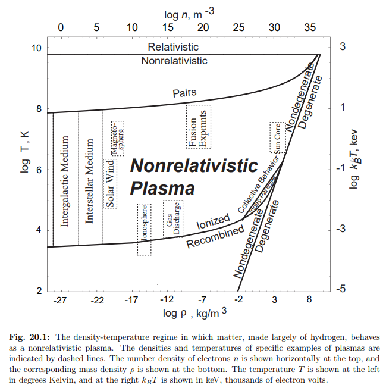
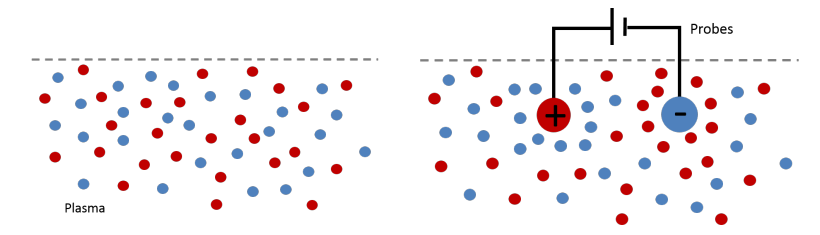
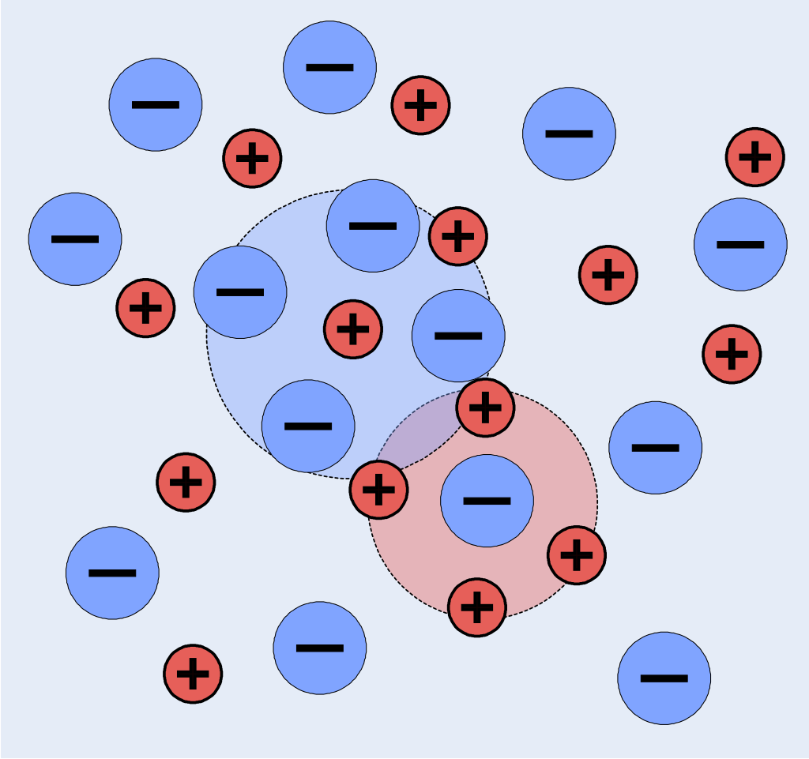
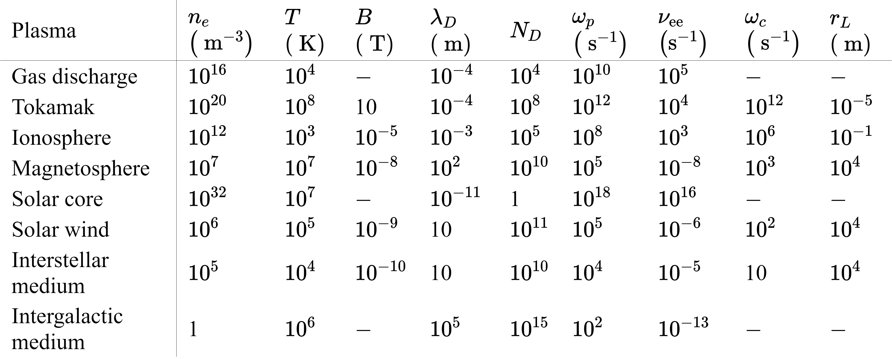
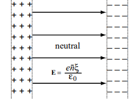

7 Plasmen
Der Begriff des Plasmas (von altgriechisch πλάσμα plásma) stammt aus dem Griechischen und bedeutet das Gebildete, Geformte.
Wir benutzen die folgende Definition:
Ein Plasma ist ein quasineutrales Gas geladener und neutraler Teilchen mit kollektivem Verhalten.
7.1 Kollektives Verhalten
Bewegen sich die geladenen Teilchen in einem Plasma, können sie lokale Änderungen der Ladungsträgerdichte hervorrufen. Die Folge sind elektrische Felder. Die Bewegung geladener Teilchen erzeugt elektrische Ströme, die wiederum von Magnetfeldern begleitet werden. Diese Feldeffekte beeinflussen die Bewegung geladener Teilchen in großen Abständen.
Bewegungsmuster der Teilchen hängen nicht nur von lokalen Bedingungen, sondern auch vom Zustand des Plasmas in entfernten Bereichen ab. Über große Entfernungen wirksame elektromagnetische Kräfte führen dazu, dass die Teilchen im Plasma simultan mit anderen interagieren.
Außerdem muss man unterscheiden zwischen Ladung-Ladung- und Ladung-Neutralgas-Wechselwirkungen.
Die wichtigsten Phänomene im Zusammenhang mit dem kollektivem Verhalten von Plasmen sind die Debye-Abschirmung sowie die Plasmafrequenz.
7.2 Typische Plasmen
Folgende Tabelle Tabelle 7.1 gibt einen Überblick über verschieden Plasmatypen und ihre Eigenschaften (Gibbon (2016)).
| Typ | Elektronendichte (cm\(^{-3}\)) | Temperatur (eV) |
|---|---|---|
| Sterne | \(10^{26}\) | 2000 |
| Trägheitsfusion | \(10^{25}\) | 3000 |
| Magnetische Fusion | \(10^{15}\) | 1000 |
| Laser-generiert | \(10^{18}\) - \(10^{24}\) | 100-1000 |
| Entladung | \(10^{12}\) | 1-10 |
| Ionosphäre | \(10^{6}\) | 0.1 |
| Interstellarer Raum | 1 | 0.01 |
(1 eV = 11600 K)

7.3 Debye-Länge
Eine wichtige Eigenschaft von Plasmen ist ihre Fähigkeit, elektrische Potentiale abzuschirmen.
Debye und Hückel (1923a) und Debye und Hückel (1923b) vermitteln grundlegende Theorien zu den Wechselwirkungen von Ionen in Elektrolyten. Diese Erkenntnisse lassen sich auf Plasmen übertragen.

7.3.1 Herleitung
Jedes geladene Teilchen innerhalb eines Plasmas zieht andere Teilchen mit entgegengesetzter Ladung an und stößt Teilchen mit der gleichen Ladung ab, wodurch in der unmittelbaren Umgebung des Teilchens eine Wolke aus überwiegend entgegengesetzten Ladungen entsteht.
Diese Wolke schirmt die eigene Ladung des Teilchens von der Außenwelt ab, d. h. sie bewirkt, dass das Coulomb-Feld des Teilchens bei großen Entfernungen exponentiell abnimmt, anstatt mit \(1/r^2\).
Diese Debye-Abschirmung der Ladung eines Teilchens kann wie folgt demonstriert und quantifiziert werden (Thorne und Blandford (2017)):
Man betrachte eine einzelne Testladung \(Q\) im Ursprung, die von einem Plasma aus Protonen und Elektronen umgeben ist. Wir definieren mit \(n_p(r)\) und \(n_e(r)\) die mittleren Dichten für Elektronen und Protonen als glatte Funktionen des Abstandes \(r\) von der Testladung, und mit \(\bar n\) die mittleren Dichten von Elektronen und Protonen. Dann ist das elektrostatische Potential \(\Phi(r)\) außerhalb des Teilchens Lösung der Poisson-Gleichung
\[ -\nabla^2 \Phi = \frac{n_p - n_e}{\epsilon_0} e + \frac{Q}{\epsilon_0} \delta(r) \tag{7.1}\]
Wir bezeichnen die Ladung eines Protons mit \(+e\) und die Ladung des Elektrons mit \(-e\).
Ein Proton besitzt in der Entfernung \(r\) von der Testladung das elektrostatische Potential \(e \Phi(r)\).
Die mittlere Ladungsträgerdichte ändert sich entsprechend zu
\[ n_p(r) = \bar n \, e^{-\dfrac{e \Phi(r)}{kT}} \approx \bar n \left(1 - \frac{e \Phi}{k T} \right) \]
bzw.
\[ n_e(r) = \bar n \, e^{+\dfrac{e \Phi(r)}{kT}} \approx \bar n \left(1 + \frac{e \Phi}{k T} \right). \]
Damit wird Gleichung 7.1 eine nichtlineare Differentialgleichung in \(\Phi\), weil \(n_p\) und \(n_e\) Funktionen von \(\Phi\) sind.
Wir können aber wegen \(e\Phi \ll kT\) die Exponentialfunktion in eine Taylorreihe entwickelt und Terme höherer Ordnung vernachlässigen.
Einsetzen in Gleichung 7.1 liefert nach Linearisierung
\[ -\nabla^2 \Phi + \frac{2 \bar n e^2}{\epsilon_0 k T} \Phi = \frac{Q}{\epsilon_0}\delta(r). \]
Die kugelsymmetrische (nur von \(r\) abhängige) Lösung ist
\[ \Phi(r) = \frac{Q}{4 \pi \epsilon_0 r} \, e^{-\sqrt{\dfrac{2r^2}{\lambda_D^2}}} \]
und besitzt die Form eines Coulomb-Potentials mit exponentiellem Abfall. Die charakteristische Skalenlänge dieses Abfalls ist der Debye-Radius
\[ \lambda_D = \sqrt{ \frac{\epsilon_0 k T}{\bar n e^2}} \]
und ist ein Maß für die Größe der Debye-Abschirmung. Der Debye-Radius hängt gleichermaßen von der Temperatur als auch von der Teilchendichte des Plasmas ab. In einem idealen Plasmsa befinden sich viele Teilchen innerhalb einer Kugel vom Radius \(\lambda_D\). Die Anzahl ist
\[ N_D = n_e \frac{4 \pi}{3} \lambda_D^3 \gg 1. \]

Wird eine Störung (z.B. eine Überschussladung) in ein Plasma eingebracht, so reicht die Wirkung dieser Störung nur bis zu einer Entfernung der Größenordnung \(\lambda_D\). Nur innerhalb dieses Abstandes weicht die lokale Ladungsträgerdichte signifikant von der makroskopischen elektrischen Neutralität ab (Abbildung 7.3).
7.3.1.1 Beispiel
Im Allgemeinen ist \(\lambda_D\) sehr klein. In der Ionosphäre ist \(n_e = 10^{12}\) m\(^{-3}\) und \(T=10^3\) K. Damit ist \(\lambda_D = 10^{-3}\) m.

Die Tabelle in Abbildung 7.4 gibt für typische Plasmen die folgenden charakteristischen Größen an:
- Teilchendichte der Elektronen \(n_e\)
- Temperatur T
- Magnetfeld \(B\)
- Debye-Länge \(\lambda_D\)
- Debye-Zahl \(N_D\)
- Plasmafrequenz \(\omega_p\)
- \(\nu_{ee}\)
- Larmor-Kreisfrequenz \(\omega_c\)
- Larmor-Radius \(r_L\).
7.4 Plasmaschwingungen und Plasmafrequenz
Das wichtigste dynamische Phänomen in Plasmen ist die Schwingungsbewegung von Protonen und Elektronen relativ zueinander.
Wird ein Plasma plötzlich aus seinem Gleichgewichtszustand gebracht, verursachen die internen Raumladungsfelder kollektive Partikelbewegungen, welche anstreben, die ursprüngliche Ladungsneutralität wiederherzustellen.
Diese kollektiven Schwingungsmuster laufen mit einer bestimmten Plasma-Frequenz ab. Wegen der hohen Frequenz tragen die Elektroden aufgrund ihrer im Vergleich zu Protonen geringeren Massenträgheit maßgeblich zur Plasmaschwingung bei. Elektronen schwingen kollektiv um die schweren Ionen, wobei die Rückstellkräfte durch die Ion-Elektron-Coulomb-Kräfte verursacht werden. Die Periodendauer dieser Bewegung ist eine typische Zeitskala.

7.4.1 Herleitung
Wir platzieren das Plasma gemäß Abb. Abbildung 7.5 entlang einer unendlich ausgedehnten Ebene in \(x=0\) und nehmen an, dass alle Protonen ortsfest bleiben. Die Elektronen werden relativ zu den Protonen um den Betrag \(\xi_0\) nach rechts in \(x\)-Richtung verschoben. Wir beobachten die Flächenüberschussladungsdichten \(-e \bar n \xi_0\) am rechten Ende des Plasmas, sowie \(+e \bar n \xi_0\) am linken Ende des Plasmas. Das resultierende elektrische Feld im Innern des Plasmas zum Zeitpunkt \(t=0\) ist \(\mathbf E = (E, 0, 0)^\top\), also
\[ E = \frac{e \bar n \xi_0}{\epsilon_0}. \]
Dieses Feld übt eine Coulomb-Kraft auf die Protonen und Elektronen aus. Die Bewegungsgleichung für die Veschiebung lautet
\[ \ddot \xi = - \frac{e}{m_e} E = - \frac{e^2 \bar n}{\epsilon_0 m_e} \xi. \]
Dies ist eine harmonische Schwingungsdifferentialgleichung. Wir haben wegen des Masseverhältnisses von Elektronen zu Protonen \(m_e/m_p = 1 / 1836\) die Kraftwirkung auf die Protonen vernachlässigt.
Mit der oben angegebene Anfangsbedingung für \(t=0\) schwingen die Elektronen harmonisch mit den Ortskoordinaten
\[ \xi(t) = \xi_0 \cos(\omega_p t), \]
wobei die Plasmafrequenz
\[ \omega_p = \sqrt{ \frac{\bar n e^2}{\epsilon_0 m_e} } \]
nur von der Plasmadichte \(\bar n\) aber nicht von der Temperatur \(T\) oder der magnetischen Feldstärke abhängt.
Die thermische Geschwindigkeit der Elektronen ist definiert durch
\[ v_e = \sqrt{ \frac{k T}{m_e} }, \]
somit ist
\[ \omega_p = \frac{v_e}{\lambda_D}. \]
Mit anderen Worten: Thermische Elektronen legen innerhalb einer Plasmaschwingungsperiode etwa eine Debye-Länge zurück.